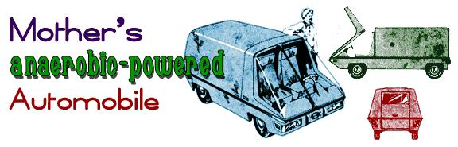

Our experiments with methane, here at THE Mother Earth News, have convinced us that over-the-road use of biogas is just about the poorest possible way to burn this fuel. Yet we're currently constructing several prototype "methane bugs" ... ultra-small and ultra-light vehicles designed expressly for operation on our own homemade natural gas.
Why this apparent contradiction? Because we figure we'll be able to lick any methane problem we're likely to encounter if we can find a practical method of powering an automobile with the fuel.
Now there's no question in our minds about the actual operation of an internal combustion engine on "swamp gas". Dad's work with our trusty '48 Chevy powerplant and a few other research projects have proven-to our satisfaction-that homemade methane is a nearly ideal fuel for such beasties: it's easy enough to plumb up, it deposits far less crud in an engine than gasoline and it spews a relatively low amount of pollutants into the air as it burns.
This wonder fuel does have one slight drawback, however: methane is the lightest of the gaseous hydrocarbons and at atmospheric pressure-it takes approximately 135–160 cubic feet of pure methane (or 180–250 cubic feet of bio-gas) to equal one gallon of gasoline. This presents a problem of sheer bulk: unless you want to tow a dirigible around behind you, you're going to find your range severely limited if you try to operate the typical Detroit Juggernaut on homemade natural gas.
There are at least six or seven possible ways around this situation, however, and we're going to try them all:
[1] Homemade methane can be "refined" so that each cubic foot of the gas has the maximum possible Btu value.
[2] A special lightweight (it takes less fuel to push around less pounds) mini-vehicle can be designed just for operation on bio-gas.
[3] That super-compact automobile can be fitted with as large a fuel tank as possible.
[4] The ultra-light car's methane tank should be a pressure bottle able to withstand from 400 to 3,000 psi so that relatively large quantities of bio-gas can be compressed into the container.
[5] The vehicle's engine/transmission/drive-train assembly should be the smallest, most efficient combination possible. "Most efficient"-in this case-probably meaning a four-cycle, high-compression, air-cooled powerplant coupled to a stick shift.
[6] The mini-car should be carefully conceived to deliver maximum utility when operated within a particular-and somewhat limited (by 1972, but certainly not 1980 standards)-performance envelope: two place, minimum luggage, rather leisurely acceleration, 55 mph top speed, 200-mile range.
[7] The operator of the vehicle should be trained to drive the car for maximum fuel economy: easy starts, constant cruising speeds, etc.
If this all sounds like something of a drag well, we're sorry about that. The alternative may well be no driving at all (or motoring down the highway on gasoline that costs better than $1.00 a gallon).
|
 |
|
|